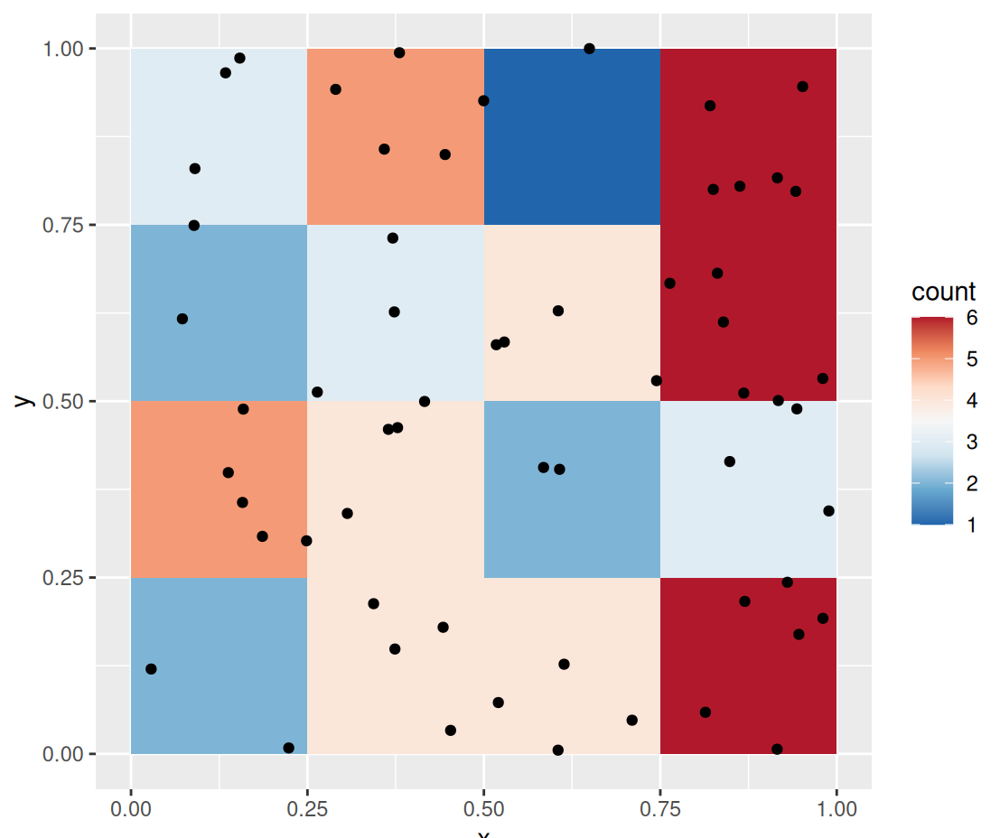
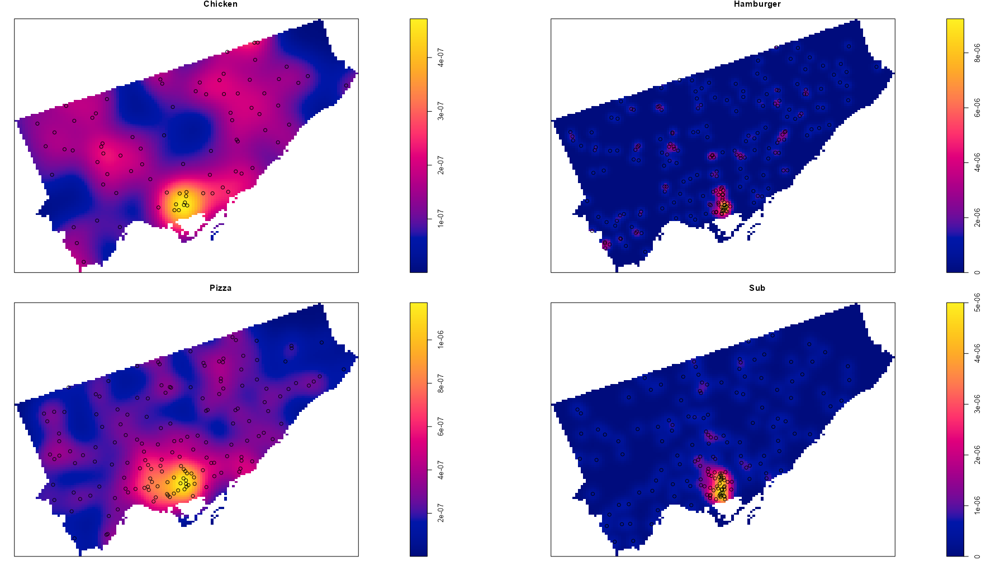
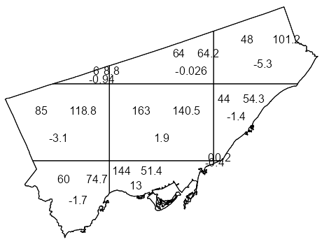
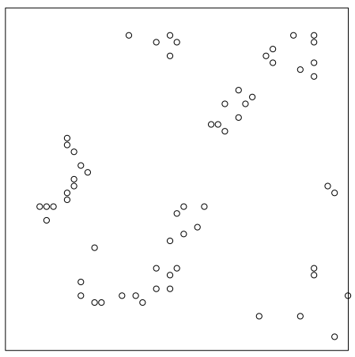
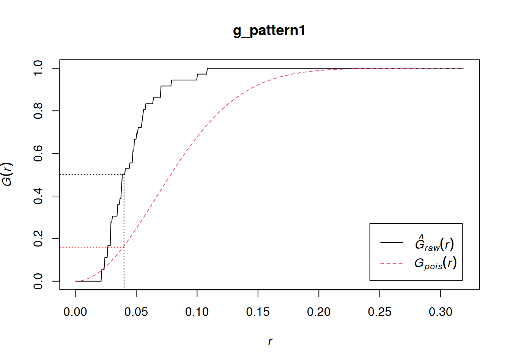
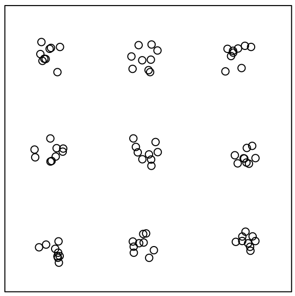
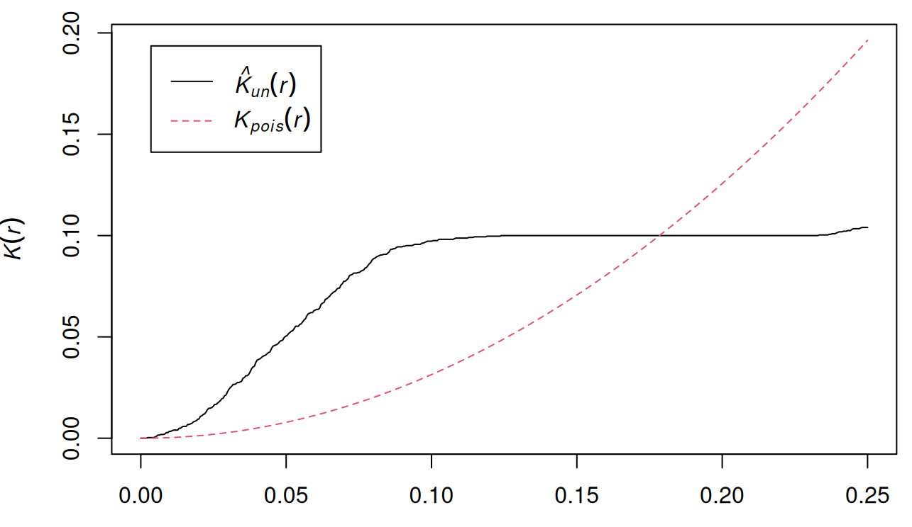
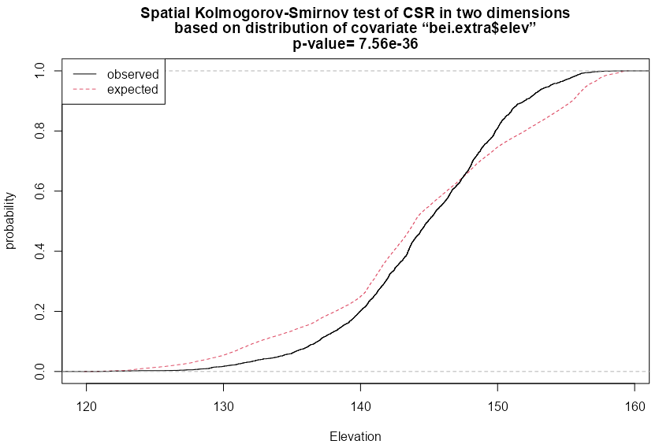

Point Patterns
Misc
- Notes from
- Ch.9 - Ch.18, An Introduction to Spatial Data Analysis and Statistics: A Course in R
- Ch.11, Spatial Data Science With Applications in R
- {spatstat} book
- Packages
- {BalancedSampling} - Select balanced and spatially balanced probability samples in multi-dimensional spaces with any prescribed inclusion probabilities.
- {groupedHyperframe} - Grouped Hyper Data Frame: An Extension of Hyper Data Frame Object
- Aggregation of function-value-table hyper column(s) and numeric hyper column(s) over a nested grouping structure
- {groupedHyperframe.random} - Simulated Grouped Hyper Data Frame
- {hyper.gam} - Generalized Additive Models with Hyper Column
- {kanova} - One-way and two-way analysis of variance for replicated point patterns, grouped by one or two classification factors, on the basis of the corresponding K-functions.
- {rsamplr} - Sampling Algorithms and Spatially Balanced Sampling
- Methods included: Sampford, correlated Poisson, spatially correlated Poisson, locally correlated Poisson, pivotal, local pivotal, cube balanced
- {spcosa} - Implements algorithms for spatial coverage sampling and random sampling from compact geographical strata.
- Calculates spatial means, standard errors
- Great circle or euclidean distances can be used for stratification
- {spatstat} - Spatial Point Pattern Analysis, Model-Fitting, Simulation, Tests
- CRAN page has some vignettes, but the manual is a kind of cheatsheet that lists names of functions that perform certain spatial operations
- Loading {spatstat} loads Spatstat-verse:
- {spatstat.data} - Datasets
- {spatstat.univar} - Estimation of one-dimensional probability distributions including kernel density estimation, weighted empirical cumulative distribution functions, Kaplan-Meier and reduced-sample estimators for right-censored data, heat kernels, kernel properties, quantiles and integration.
- {spatstat.geom} - Defines spatial data types and supports geometrical operations on them. Data types include point patterns, windows (domains), pixel images, line segment patterns, tessellations and hyperframes
- {spatstat.random} - Generates random spatial patterns of points
- {spatstat.explore} - Exploratory data analysis and nonparametric analysis of spatial data, mainly spatial point patterns
- {spatstat.model} - Parametric statistical modelling and inference for spatial data, mainly spatial point patterns
- {spatstat.linnet} - Defines types of spatial data on a linear network and provides functionality for geometrical operations, data analysis and modelling of data on a linear network
- {splancs} - Spatial and Space-Time Point Pattern Analysis
- {stpp} - Space-Time Point Pattern Simulation, Visualisation and Analysis
- Many of the models encountered in applications of point process methods to the study of spatio-temporal phenomena are covered
- Resources
- {spatstat} book: Spatial Point Patterns: Methodology and Applications with R (R >> Documents >> Geospatial)
- An Introduction to Spatial Data Analysis and Statistics: A Course in R
- Inventory of methods for comparing spatial patterns in raster data
- Teaches you how to analyze how the physical arrangement of observations in one raster differs from the physical arrangement of observations in another raster.
- Nowosad series of posts for continuous and categorical raster data in overlapping and arbitrary areas
- Reasons
- Study of change (i.e., how the spatial pattern of a landscape has changed over time)
- Study of similarity (i.e., how similar the spatial pattern of two landscapes is)
- Study of association (i.e., how the spatial pattern of one theme is associated with the spatial pattern of another theme)
- Spatial model assessment (i.e., how well a model output matches the spatial pattern of the reference data)
- Point Pattern Analysis vs. Geostatistical Processes
- Point Patttern Analysis:
- Concerned with describing patterns of points over space and making inference about the process that could have generated an observed pattern.
- The main focus here lies on the information carried in the locations of the points, and typically these locations are not controlled by sampling but a result of a process we are interested in, such as animal sightings, accidents, disease cases, or tree locations.
- Assumes that for an observed area, all points are available, meaning that locations without a point are observed and contain no point
- Point processes locations are random variables
- Geostatistical Processes:
- There are values of some phenomenon everywhere, but observations are limited to a set of locations that we can control, at least in principle.
- The prime interest is not in the observation locations but in estimating the value of the observed phenomenon at unobserved locations
- The measured variable is a random field with locations fixed
- Point Patttern Analysis:
- Examples of Point Processes (Papers covering this topics listed in {spatstat} book, p. 142)
- A silicon wafer is inspected for defects in the crystal surface, and the locations of all defects are recorded
- Questions for study would include frequency of defects, spatial trends in intensity, and spacing between defects
- Earthquake aftershocks in Japan are detected and the epicentre latitude and longitude and the time of occurrence are recorded.
- These data could be analysed as a spatio-temporal point process, or as a marked point process in two-dimensional space.
- If the occurrence times are ignored, it may be analysed as a spatial point process.
- The locations of petty crimes that occurred in the past week are plotted on a street map of Chicago.
- Questions for study include the frequency of crimes, spatial variation in intensity, and evidence for clusters of crimes
- A tiger shark is captured, tagged with a satellite transmitter, and released. Over the next month its location is reported daily. These points are plotted on a map.
- Not a point process, since the events recorded serially (i.e. in sequence)
- A herd of deer is photographed from the air at noon each day for 10 days. Each photograph is processed to produce a point pattern of individual deer locations on a map.
- Each day produces a point pattern that could be analysed as a realisation of a point process. However, the observations on successive days are dependent (e.g., having constant herd size and systematic foraging behaviour).
- A pragmatic alternative may be to treat the data as a spatio-temporal point process.
- A silicon wafer is inspected for defects in the crystal surface, and the locations of all defects are recorded
- Properties of a Spatial Point Process:
First Order: The intensity function measures the number of points per area unit; this function is spatially varying for a inhomogeneous point process
Second Order: Given a constant or varying intensity function, describe whether points are distributed independently from one another, tend to attract each other (clustering), or repulse each other (more regularly distributed than under complete spatial randomness)
- How the sampling method affects the variance of your mean estimate (source)

- The smoothed surface represents and spatially autocorrelated surface
- Both the grid-based and evenly-spaced sampling schemes yield a very narrow range of estimates of the mean, because these schemes at this low (1%) sampling rate may miss peaks and troughs in the data. If a single sample location happens to hit a peak, then a bunch of others are guaranteed to miss it because the even spacing guarantees that no other samples will be taken nearby.
- The clustered sampling scheme produces a much wider range of estimates of the mean. This is because sometimes a large number of samples close together will land near a peak or trough producing a biased estimate of the mean in that case, because we’re measuring a disporportionate number of points close to an extreme value.
Terms
- Correlation-Stationary - The pair correlation between points u and v depends only on their relative position. ({spatstat} book, p. 243)
- This would be true if the process is stationary, but is also true for an inhomogeneous Poisson process and for many other processes.
- Covariates - Any data treated as explanatory, rather than as part of the ‘response’
- In contrast to marks, covariates seem to be spatial information about the location and not information about the thing at the location .
- e.g. the altitude, slope of terrain, hydrology (depth to water table, annual recharge flow), soil (soil type, acidity), understorey vegetation at tree locations
- Can also be other point patterns, e.g. fault lines near metal deposits or a potential cancer causing substance or thing near cancer cases.
- Independence - Information about the outcome in one region of space has no influence on the outcome in other regions. ({spatstat} book, pp. 131-133)
- The number of points in quadrat A does not influence how many points are in quadrat B no matter the size of the quadrats.
- The points do not interact with each other.
- Intensity - The expected number of events per unit area — conventionally denoted by \(\lambda\). In most cases the process is not know, so its intensity cannot be directly measured. ({spatstat} book, Ch.6 p. 157)
- Isotropic - Same as Stationarity but instead of talking about a shifting window, statistical properties are unaffected by rotations, i.e. orientation.
- Density - Empirical estimate of Intensity — \(\hat \lambda = n / a\) , where \(a\) is the area of the region
- Homogeneity - In a general sense, this means the points have no preference for any spatial location (e.g. constant intensity for all windows, quadrats, etc.)
- Inhomogeneous - The average density of points is spatially varying (i.e. density is a function of location) ({spatstat} book, pp. 137-138)
- For an inhomogeneous Poisson process, independence still holds.
- Interaction - Stochastic dependence between points (e.g. positive and negative correlation, clustering, inhibition or repelling)
- Marks - Auxiliary information attached to each point in the point pattern
- In contrast to covariates, marks seem to be information about the thing at the location and not spatial information about the location.
- e.g. a tree’s species, and diameter
- e.g. a catalogue of star locations may give their sky masses, magnitudes, shapes, and colors
- e.g. disease case locations may be linked to detailed clinical records
- Observation Window - The area for which the point dataset is exhaustive, or complete.
- Point Process - Assumes that the point pattern is random (in the general sense, i.e. the locations and number of points are not fixed) and that the point pattern is the response or observation of interest.
- Quadrats - Cells of a gridded area representing subregions. Useful for analyzing how density varies across a region
- Rules of Thumb for choosing the number of quadrats
- Each quadrat should have a minimum of two events
- Formula based on the area (A) and number of events (N)
\[ Q = \frac{2A}{N} \]
- Rules of Thumb for choosing the number of quadrats
- Regularity (or Dispersion) - The state at which points tend to be located at similar distances from each other.
- Stationary - The size and coordinates of the window doesn’t affect the point process’ statistical properties. This implies that ntensity is constant (homogeneous).
- Tesselation - A division of space into non-overlapping regions. These regions are called ‘tiles’ and their shapes are arbitrary. Often used to represent administrative or political divisions, such as the subdivision of a country into states or provinces. ({spatstat} book p.120)
Also see
- Terms >> Intensity >> Example 2
- Other Stuff >> Inhomogeneous >> EDA >> Example
- p. 689 in the {spatstat} book, a permutation test procedure
Types
# rectangular quadrats(W, nx, ny) # nx and ny are number of vert and horiz quadrats tess(xgrid = xg, ygrid = yg) # xg, yg are vecs of vert and horiz grid lines # tile list tess(tiles = z) # z is list of windows (class "owin") # pixellated tess(image=Z) # e Z is a pixel image with factor valuesas.tesscan also be used to convert other types of data to a tessellation
Algorithms
Dirichlet 
Delaunay dirichlet(ppp_obj) delaunay(ppp_obj)- Dirichlet: The tile associated with a given point of the pattern is the region of space which is closer to that point than to any other point of the pattern.
- Delaunay: A network of straight lines connecting the points. Two points of the pattern are joined if their Dirichlet tiles share a common edge. The resulting network defines a set of non-overlapping triangles, which cover the convex hull of the point pattern rather than the entire window containing the point pattern.
Operations
plot(tess_obj) # plot.tess B <- A[c(1,3,5)] # subset tiles where A is a tesselation A_w <- A[W] # by window ls_A <- tiles(A) # list of tiles tile.areas(A) # areas sapply(ls_A, diameter) # diameters split(ppp_obj, A) # list of tiles with points
{kind=link}
{kind=link}
{kind=link}
{kind=link}
Basics
Example 1: Quadrats
pacman::p_load( dplyr, ggplot2, spatstat ) data("PointPatterns", package = "isdas") summary(PointPatterns) ## x y Pattern ## Min. :0.0169 Min. :0.005306 Pattern 1:60 ## 1st Qu.:0.2731 1st Qu.:0.289020 Pattern 2:60 ## Median :0.4854 Median :0.550000 Pattern 3:60 ## Mean :0.5074 Mean :0.538733 Pattern 4:60 ## 3rd Qu.:0.7616 3rd Qu.:0.797850 ## Max. :0.9990 Max. :0.999808 ggplot() + geom_bin2d(data = filter(PointPatterns, Pattern == "Pattern 1"), aes(x = x, y = y), binwidth = c(0.25, 0.25)) + geom_point(data = filter(PointPatterns, Pattern == "Pattern 1"), aes(x = x, y = y)) + scale_fill_distiller(palette = "RdBu") + coord_fixed()geom_bin2dis called to plot a map of counts of events in the space defined by the bins.- PointPatterns contains x, y coordinates that range from 0 to 1 and a categorical variable Pattern indicating each of the four difffernt density patterns
Example 2: Create a ppp object
# define a window wnd <- owin(c(0,1), c(0,1)) ppp1 <- as.ppp(PointPatterns, wnd) summary(ppp1) ## Marked planar point pattern: 240 points ## Average intensity 240 points per square unit ## ## Coordinates are given to 16 decimal places ## ## Multitype: ## frequency proportion intensity ## Pattern 1 60 0.25 60 ## Pattern 2 60 0.25 60 ## Pattern 3 60 0.25 60 ## Pattern 4 60 0.25 60 ## ## Window: rectangle = [0, 1] x [0, 1] units ## Window area = 1 square unit # plot a specific category of point plot(split.ppp(ppp1)$`Pattern 3`)- The window defined in
owinshould define a region for analysis that is consistent with the pattern of interest ppp(plannar point pattern) is the fundamental spatstat object- frequency is the number of points in that region (e.g. Pattern)
- proportion is the proportion of points in that region to the overall dataset
- intensity it the number of points divided by the area (1 x 1 = 1)
- The window defined in
Example 3: Get point counts for each quadrat by region/subregion
quadratcount(split(ppp1), nx = 4, ny = 4) ## List of spatial objects ## ## Pattern 1: ## x ## y [0,0.25) [0.25,0.5) [0.5,0.75) [0.75,1] ## [0.75,1] 3 5 1 6 ## [0.5,0.75) 2 3 4 6 ## [0.25,0.5) 5 4 2 3 ## [0,0.25) 2 4 4 6 ## ## Pattern 2: ## x ## y [0,0.25) [0.25,0.5) [0.5,0.75) [0.75,1] ## [0.75,1] 14 2 2 6 ## [0.5,0.75) 0 0 4 6 ## [0.25,0.5) 6 3 1 2 ## [0,0.25) 4 6 2 2 ## ## Pattern 3: ## x ## y [0,0.25) [0.25,0.5) [0.5,0.75) [0.75,1] ## [0.75,1] 2 11 5 7 ## [0.5,0.75) 1 1 6 4 ## [0.25,0.5) 1 10 3 2 ## [0,0.25) 2 1 2 2 ## ## Pattern 4: ## x ## y [0,0.25) [0.25,0.5) [0.5,0.75) [0.75,1] ## [0.75,1] 4 5 6 3 ## [0.5,0.75) 3 3 4 2 ## [0.25,0.5) 3 3 4 2 ## [0,0.25) 5 4 6 3- nx and ny specify how many quadrats (i.e. cells) you want per row and per column respectively
splitdivides the dataset by the region variable or event type
Example 4: Quadrat Count for Toronto Fast Food

library(spatstat) library(sf) data("Fast_Food", package = "isdas") data("Toronto", package = "isdas") head(Fast_Food) #> Simple feature collection with 6 features and 1 field #> Geometry type: POINT #> Dimension: XY #> Bounding box: xmin: 620173 ymin: 4840698 xmax: 638544.7 ymax: 4853394 #> Projected CRS: NAD83 / UTM zone 17N #> Class geometry #> 1 Chicken POINT (635575.8 4853394) #> 2 Chicken POINT (636724.5 4842644) #> 3 Chicken POINT (622524.7 4840698) #> 4 Chicken POINT (638544.7 4846541) #> 5 Chicken POINT (627850.5 4843178) #> 6 Chicken POINT (620173 4841782) head(toronto) #> Simple feature collection with 1 feature and 0 fields #> Geometry type: MULTIPOLYGON #> Dimension: XY #> Bounding box: xmin: 609550.5 ymin: 4826375 xmax: 651611.8 ymax: 4857439 #> Projected CRS: NAD83 / UTM zone 17N #> geometry #> 1 MULTIPOLYGON (((609550.5 48... 1ppp_ff <- as.ppp(Fast_Food, as.owin(Toronto)) #> Marked planar point pattern: 614 points 2#> Multitype, with levels = Chicken, Hamburger, Pizza, Sub #> window: polygonal boundary #> enclosing rectangle: [609550.5, 651611.8] x [4826375, 4857439] units 3qct_ff <- quadratcount(ppp_ff, nx = 3, ny = 3) 4table(qct_ff) #> 0 6 44 48 60 64 85 144 163 #> 1 1 1 1 1 1 1 1 1 plot(qct_ff)- 1
- To automatically create a window object using the boundaries from a sf object, {sf} needs to be loaded.
- 2
- The categories in the Class variable are captured as levels
- 3
- 3 x 3 seems to be a good starting grid for regions such as a city if your data isn’t too sparse
- 4
- There is 1 quadrat with 0 points. Given that were using a 3 x3 grid, it’s very small and probably located underneath the quadrat with 44 points.
Example 5: Approximate a window using coordinates
data(bear_df, package = "isdas") summary(bear_df) ## x y marks ## Min. :515743 Min. :6812138 Day Time :502 ## 1st Qu.:518994 1st Qu.:6813396 Night Time:498 ## Median :519526 Median :6816724 ## Mean :519321 Mean :6816474 ## 3rd Qu.:519982 3rd Qu.:6818111 ## Max. :522999 Max. :6821440 W <- owin(xrange = c(515000, 523500), yrange = c(6812000, 6822000)) bear.ppp <- as.ppp(bear_df, W = W) summary(bear.ppp) ## Marked planar point pattern: 1000 points ## Average intensity 1.176471e-05 points per square unit ## ## Coordinates are given to 10 decimal places ## ## Multitype: ## frequency proportion intensity ## Day Time 502 0.502 5.905882e-06 ## Night Time 498 0.498 5.858824e-06 ## ## Window: rectangle = [515000, 523500] x [6812000, 6822000] units ## (8500 x 10000 units) ## Window area = 8.5e+07 square units- Uses the minimum and maximum values of each coordinate
Various Object Manipulations
library(sf) # change the window of a ppp obj new_ppp <- ppp_obj[W] # W is a window object of class "owin" # SpatialPoints class as.ppp(sp_pts) # "SpatialPolygons" class; e.g. US State boundaries # 1 as.owin(sp_poly_obj) # combines all states into one obj i.e. US country map # 2 Create a separate window for each state regions <- slot(sp_poly_obj, "polygons") regions <- lapply(regions, function(x) { SpatialPolygons(list(sp_poly_obj)) }) windows <- solapply(regions, as.owin) # list of owin objs te <- tess(tiles = windows) # "SpatialPolygonsDataFrame" cp <- as(columbus, "SpatialPolygons") cregions <- slot(cp, "polygons") cregions <- lapply(cregions, function(x){ SpatialPolygons(list(x)) }) cwindows <- solapply(cregions, as.owin) ch <- hyperframe(window=cwindows) ch <- cbind.hyperframe(ch, columbus@data)- See {spatstat} book p. 76 for other GIS object manipulations
- {maptools} is no more and many of it’s functionalities were transferred to {sf}, so just loading that package makes most of this stuff pretty painless.
- For an object of class “SpatialPolygonsDataFrame” (geometry + variables), the result is a hyperframe containing a column of “owin” objects followed by the columns of auxiliary data
{kind=link}
Kernel Density
Kernel density is a smooth estimate of the underlying intensity of the process, and the degree of smoothing is controlled by the bandwidth
- A map of the kernel density is better able to capture the variations in density across the region.
Misc
- The choice of bandwidth involves a tradeoff between bias and variance: as bandwidth increases, typically the bias increases and variance decreases.
- Edge effects in uncorrected estimates will show the intensity decreasing at the window boundaries
- Densities estimates at each point can be used as weights in a model:
density(swp, sigma = 1, at = "points") - Standard Errors:
dse <- density(swp, 1, se=TRUE)$SE- Although the standard error provides an indication of accuracy, and is justified by asymptotic theory, confidence intervals based on the standard error are notoriously unreliable
- Should have a
plotmethod
- A fixed smoothing bandwidth (like in
density) is unsatisfactory if the true intensity varies greatly across the spatial domain, because it is likely to cause oversmoothing in the high-intensity areas and undersmoothing in the low intensity areas. (e.g. bad for seismology)- Solution: Adaptive Smoothing
- Dirichlet-Voronoï estimator (f= 1):
adaptive.density(swp, f=1) - {sparr} - Provides a suite of adaptive kernel spatial smoothing techniques and related tools
- Dirichlet-Voronoï estimator (f= 1):
- Solution: Nearest-Neighbor
- Example: 10th Nearest Neighbor Estimate:
nndensity(swp, k=10)
- Example: 10th Nearest Neighbor Estimate:
- Solution: Adaptive Smoothing
Process
- Each quadrat is treated as independent of the others in the window.
- There isn’t a grid of quadrats but in essence, one that slides around the study area.
- it gives greater weight to events that are close to the center of the window, and less weight to events that are more distant from the center of the window
- The kernel function visits each point on a fine grid and obtains an estimate of the density by summing the weights of all events.
- The shape of the Gaussian kernel depends on the standard deviation, which controls how “big” the window is, or alternatively, how quickly the function decays via decreasing weights. We will call the standard deviation the kernel bandwidth of the function.
{spatstat.explore::density.ppp} - Kernel smoothed intensity function from a point pattern
- kernel: “gaussian”, “epanechnikov”, “quartic” or “disc”
- Default is Gaussian. The only other kernel that I’ve seen mentioned in the book or docs is the Epanechnikov kernel which is used for Pair Correlation (See Spatial Dependence >> Spatial Correlation >> Pair Correlation), so I have no idea what the other ones are used for or why.
- weights: Optional weights to be attached to the points
- diggle: Logical. If TRUE, use the Jones-Diggle improved edge correction, which is more accurate but slower to compute than the default correction.
- sigma: Bandwidth
bw.pplassumes an inhomogeneous Poisson process. Uses a likelihood cross-validation method- Tends to select more appropriate values than other methods when the pattern consists predominantly of tight clusters
bw.diggleassumes a Cox process, which is more clustered (positively correlated) than a Poisson process. Uses a mean square error cross-validation method- Best when trying to detect a single tight cluster in the midst of random noise
bw.fracfor a fast bandwidth selection rule based on the window geometry- Probably best for larger datasets
- kernel: “gaussian”, “epanechnikov”, “quartic” or “disc”
Example: Fast Food in Toronto
library(spatstat) library(sf) # sf dfs data("Fast_Food", package = "isdas") data("Toronto", package = "isdas") # create a ppp obj ppp_ff <- as.ppp(Fast_Food, as.owin(Toronto)) # calculate densities for each type of fast food kernel_density <- density(split(ppp_ff), sigma = bw.diggle) par(mfrow = c(2, 2), mar = c(0, 0, 1.1, 2)) purrr::pwalk( list( kernel_density, split.ppp(ppp_ff), # add pts names(kernel_density) ), \(x1, x2, x3) { plot(x1, main = x3) plot(x2, add = TRUE) } )bw.digglecalculates the bandwidth using cross-validation. It’s part of one of the group of sub-packages, {spatstat.explore}, that automatically gets loaded. There do seem to be other options, but I chose this based on the example in the Pebesma-Bivand book.- If you just want to plot the densities without the points, it’s
plot(kernel_density) - See
spatstat.geom::plot.imfor beaucoup styling options for the density plot. I didn’t add it here, but when there aren’t any other labels, I kind of liked the addcontour = TRUE as an extra density cue especially for the darker colors. - Note that density color scales have different ranges in the legends
{kind=link}
CSR Tests
Completely Spatially Random (CSR) ({spatstat} book, pp. 135-136)
- Every point in a quadrat is independent and uniformly distributed
- When two CSR patterns are combined their intensities are additive.
These simple numerical indexes of spatial pattern are useful when a large number of different point patterns need to be compared, or to monitor changes in spatial clustering over time. Their main weakness is that they compress all the spatial information into a single number, conflating information from different spatial scales and different spatial locations.
10 realizations (i.e. potential patterns) of the same random point process

Quadrat-based Chi-Square Test
A Pearson \(\chi^2\) independence test that compares the empirical distribution of events by quadrats to the distribution of events as expected under the hypothesis that the underlying process is random. (i.e. tests homogeneity assuming independence)
\[ \begin{align} &\chi^2 = \sum_i^Q r_i^2\\ &\text{where} \;\; r_i = \frac{\text{observed}_i - \text{expected}_i}{\sqrt{\text{expected}_i}} \end{align} \]- \(r_i\) is the Pearson residual and \(Q\) is the number of quadrats
If there’s a variable available and there’s reason to believe that it has an influence on intensity, then use the \(\chi^2\) + covariate version as it has more power. (See Intensity >> Covariate Dependence >> Tests >> Quadrat-based \(\chi^2\) test)
Hypotheses
- H0: The point process is homogeneous Poisson process
- Ha: It’s not
Reasons for Rejection of the Null
- Intensity is not homogeneous
- Events/points are not independent
- When there are a lot of events in each quadrat, this reason can be discarded.
- See Intensity >> Covariate Dependence >> Tests >> Quadrat-based \(\chi^2\) test >> Example
Issues
- Test results is affected by the chosen quadrat grid.
- Count-based so size of the quadrat matters. With irregular shaped quadrats (e.g. within a city boundary), it might be difficult to create a grid with roughly homogeneous counts.
- The test is not sensitive to the relative position of the events within the quadrats. So, there could be extreme clustering happening within the quadrats and the test might not reject the Null.
It’s recommended to compute the variance-to-mean ratio or \(\chi^2\) statistic for different sizes of quadrats, and to plot the statistic against quadrat size.
{spatstat.explore::quadrat.test}
- If lambda is provided then the Null is a Poisson point process with that \(\lambda\) (i.e. intensity or probably also Poisson mean)
- Multiples from multiple study areas can be pooled:
pool(test1, test2, test3) - Can also use
split.ppp(ppp_ff)and have each point category tested. - This function has methods for point patterns (class “ppp”), split point patterns (class “splitppp”), point process models (class “ppm” or “slrm”`) and quadrat count tables (class “quadratcount”).
- Plotting the object will display the quadrats, annotated by their observed and expected counts and the Pearson residuals.
- Pearson residuals can be extracted with
residuals. They evidently aren’t standardized, but if standardized, they can be treated as z-scores with values > 1.96 indicating which quadrats are causing the rejection of the Null. (See Regression, Diagnostics >> Residuals >> Standardized Residuals)
Example:
quadrat.testusing a ppp object
library(spatstat) library(sf) # sf dfs data("Fast_Food", package = "isdas") data("Toronto", package = "isdas") # create a ppp obj ppp_ff <- as.ppp(Fast_Food, as.owin(Toronto)) q_test <- quadrat.test(ppp_ff, nx = 3, ny = 3) q_test ## Warning: Some expected counts are small; chi^2 approximation may be inaccurate ## Chi-squared test of CSR using quadrat counts ## ## data: Fast_Food.ppp ## X2 = 213.74, df = 8, p-value < 2.2e-16 ## alternative hypothesis: two.sided ## ## Quadrats: 9 tiles (irregular windows)- All expected counts (assumes a uniform Poisson point process) should be greater than 5 which is why there’s a warning.
- The docs of this function sound very much like the stuff in my Discrete Analysis notebook, so see that for further details.
- Options seem to be to use method = “MonteCarlo” which relaxes the expected count > 5 condition or using a smaller grid.
- p-value < 0.05 suggests that this is not a CSR (completely spatially random — aka uniform Poisson point process) pattern
- All expected counts (assumes a uniform Poisson point process) should be greater than 5 which is why there’s a warning.
Cressie-Read Power Divergence Test
- \(\chi^2\)-based family of tests
- Hypotheses (Same as previous section)
- H0: The point process is homogeneous Poisson process
- Ha: It’s not
- Test Statistic
\[ 2nI = \frac{2}{\text{CR}(\text{CR} + 1)} \sum_i \left[\left(\frac{X_i}{E_i}\right)^{CR}-1\right] \]- \(X_i\) is the ith observed count
- \(E_i\) is the ith expected count
- \(\text{CR}\) options
- \(\text{CR} = -2\) results in the Neyman modified statistc (NM2)
- \(\text{CR} = -1\) results in the modified likelihood ratio test statistic (GM2)
- \(\text{CR} = -\frac{1}{2}\) results in the Freeman-Tukey statistic (T2)
- More robust to small expected frequencies
- \(\text{CR} = 0\) results in the likelihood ratio test statistic (G2)
- More sensitive to small observed frequencies
- \(\text{CR} = \frac{2}{3}\) is the recommnedation by Cressie-Read
- A compromise between Pearson’s Chi-Square and the Likelihood Ratio
- \(\text{CR} = 1\) results in the Pearson \(\chi^2\) statistic (previous section)
- Balanced sensitivity to small counts
- {spatstat.explore::quadrat.test} has a CR argument
Clark-Evans Test
Assumes the distribution of a distance-based index is Normal and applies NHST to the pattern’s estimated index.
Clark-Evans Index, \(R\)
\[ R =\frac{\sqrt{\bar \lambda}}{m} \sum_i^m d_i \]- \(d_i\) is a nearest-neighbor distance for event \(i\) out of \(m\) events
- \(\bar \lambda = n \;/\; |W|\) is the average intestity for the entire point pattern
Guidelines
- \(R \gt 1\) suggests regularity
- \(R =1\) is consistent with a CSR
- \(R \lt 1\) suggests clustering
Assumes point process is stationary (i.e. constant intensity)
- An inhomogeneous point pattern will typically give R < 1, and can produce spurious significance
Test requires edge effects correction otherwise R will be positively biased
Example: {spatstat} book, p. 259
data("redwood") plot(redwood) summary(redwood) #> Planar point pattern: 62 points #> Average intensity 62 points per square unit #> #> Coordinates are given to 3 decimal places #> i.e. rounded to the nearest multiple of 0.001 units #> #> Window: rectangle = [0, 1] x [-1, 0] units #> (1 x 1 units) #> Window area = 1 square unit clarkevans.test(redwood, correction = "donnelly", alternative = "clustered") #> Clark-Evans test #> Donnelly correction #> Z-test #> #> data: redwood #> R = 0.58499, p-value = 1.906e-11 #> alternative hypothesis: clustered (R < 1)
Hopskell-Skellam Test
Assumes the distribution of a distance-based index is F and applies NHST to the pattern’s estimated index.
Hopskell-Skellam Index, \(A\)
\[ A = \frac{\sum_i^m d_i^2}{\sum_i^m e_i^2} \]- \(d_i\) is the distance the event \(i\)’s nearest neighbor from \(m\) randomly sampled events
- \(e_i\) is the distance of point \(i\)’s (event or empty space) nearest neighbor from \(m\) randomly sampled points
Guidelines
- \(A \gt 1\) is consistent with regularity
- \(A = 1\) is consistent with CSR
- \(A \lt 1\) is consistent with clustering
The Hopkins-Skellam index is much less sensitive than the Clark-Evans index to problems such as edge effect bias and spatial inhomogeneity
Example: {spatstat} book, p. 259
hopskel.test(redwood, alternative="clustered") #> Hopkins-Skellam test of CSR #> using F distribution #> #> data: redwood #> A = 0.18176, p-value < 2.2e-16 #> alternative hypothesis: clustered (A < 1)- See the Clark-Evans Test example for details in the redwood dataset (ppp object)
MAD Test
Equivalent to plotting the global envelopes and declaring a statistically significant outcome if the estimated function wanders outside the global envelope anywhere
- See Uncertainty >> Simulation Envelopes
H0: CSR
Ha: Not CSR
Example: {spatstat} book, p. 259
swp <- rescale(swedishpines) mad.test(X = swp, fun = Lest, nsim = 99, rmax = 2, use.theory = TRUE, verbose = FALSE) #> Maximum absolute deviation test of CSR #> Monte Carlo test based on 99 simulations #> Summary function: L(r) #> Reference function: theoretical #> Alternative: two.sided #> Interval of distance values: [0, 2] metres #> Test statistic: Maximum absolute deviation #> Deviation = observed minus theoretical #> #> data: swp #> mad = 0.29999, rank = 1, p-value = 0.01- For details on swp (Swedish Pines), see the example in Uncertainty >> Simulation Envelopes
- The p-value < 0.05, so not CSR
- fun = Lest says use the L Function (See Spatial Correlation >> L-Function)
- rmax = 2 says test the distance range, \(0 \le r \le 2 \; \text{meters}\). Argument from
KestwhichLestis a transformation of.- This value can be gotten from the output of the
envelopefunction. (See the example in Uncertainty >> Simulation Envelopes). In the example, the max range was 2.4 m, but I guess he just rounded down.
- This value can be gotten from the output of the
- use.theory = TRUE says use the theoretical value of the function as the reference value. TRUE is the default if Y is a ppp or ppm object which swp is. So this specification was probably unnecessary.
DCLF Test
Based on the MSE between the empirical summary function and the theoretical function over a range of distance values.
- Similar to the MAD test since it uses simulation via
envelopeand some sort of spatial dependence function
- Similar to the MAD test since it uses simulation via
More powerful than the MAD test provided the maximum distance is chosen carefully; the MAD test is more reliable when little information is available about the range of dependence.
- Not sure what this means. The envelope function gives you a recommended range for \(r\) (see the example in Uncertainty >> Simulation Envelopes). Maybe it’s talking about getting the distance from pair correlation, domain knowledge, or a range established by the literature.
H0: CSR
Ha: Not CSR
Example: {spatstat} book, p. 259
swp <- rescale(swedishpines) dclf.test(X = swp, fun = Lest, nsim = 99, rmax = 2, use.theory = TRUE, verbose = FALSE) #> Diggle-Cressie-Loosmore-Ford test of CSR #> Monte Carlo test based on 99 simulations #> Summary function: L(r) #> Reference function: theoretical #> Alternative: two.sided #> Interval of distance values: [0, 2] metres #> Test statistic: Integral of squared absolute deviation #> Deviation = observed minus theoretical #> #> data: swp #> u = 0.046781, rank = 3, p-value = 0.03- See MAD test example for details on the ppp object, function arguments, etc.
- The p-value < 0.05, so not CSR
{kind=link}
{kind=link}
Spatial Dependence
Misc
- tl;dr:
- Run the J Function if you want to analyze the overall pattern of the study area
- Run the L Function if you want to analyze patterns at all scales of the study area
- Think… the point pattern of 1st order neighbors area, the pattern of 1st and 2nd order neighbors area, etc.
- Use correction = “best”
- You should probably use both J and L as they technically measure different things but the interpretations of the results have similar implications. i.e. come at the analysis from multiple angles
- Use a Simulation Envelope and Loh bootstrap or Block Variance method for the functions to include uncertainty in the analysis
- Basic Assumptions
- An appropriate window selection is used
- If at all possible, the region should be selected in such a way that it is consistent with the underlying process. This is not always possible, either because the underlying process is not known, or because of limitations in data collection capabilities.
- All events within the window have been identified
- No solutions were given for sampled events, so the technique is discouraged.
- An appropriate window selection is used
- From the {spatstat} book
- When interpreting the dependence functions: “the careful scientist will not say that this ‘indicates’ clustering, but that it is ‘consistent with’ clustering, or that it indicates ‘positive association’ between points”
- “Spatial clustering does not imply that the points are organised into identifiable ‘clusters’; merely that they are closer together than would be expected for a completely random pattern.”
- Think he’s saying that “clustering” implies a cause and further investigation is required in order to call a “spatial inhomogeneity” a cluster.
- Edge Effects for Spacing Functions
- When a window is chosen, if events lie outside the window, this can bias the test results. An event at the edge of window may not be close to another event inside the window but may be close to one just outside the window.
- Example: Analysis of pizza restaurants in Toronto may be limited to the city limits. This does not mean that establishments do not exist beyond those boundaries. When the extent of the process exceeds the window used in the analysis, the point pattern is observed only partially, and it is possible that the omitted information regarding the location of events beyond the boundary may introduce some bias.
- A bias correction is recommended (especially for F and G but not for J) by using weighting events via correction
- “rs” (reduced-sample): Restricts the analysis to points or locations that are far enough from the boundary so that the entire region of interest (e.g., a circle of radius r) lies within the study area (Available for G and F)
- You’re essentially removing data at the edges, so there will be a reduction in power
- “km” (Kaplan-Mier): Treats the boundary as a “censoring” mechanism, where distances beyond the boundary are treated as censored observations. (Available for G and F)
- “Hanisch”: Weights observations based on their proximity to the circle boundary drawn for each value of \(r\). Points near the boundary receive lower weights because their neighborhoods are more likely to be truncated. (Available for G)
- “cs”(Chiu-Stoyan): Same idea as the Hanisch method but taylored for the F-Function.
- “best”: Chooses the best option based on the data and window geometry
- “all” : Performs all the corrections,
plotwill plot each corrected empirical curve so you see their effects
- “rs” (reduced-sample): Restricts the analysis to points or locations that are far enough from the boundary so that the entire region of interest (e.g., a circle of radius r) lies within the study area (Available for G and F)
Spacing Functions
Functions that measure the ‘nearest-neighbour’ distance from each data point to the nearest other data point
G-Function
A cumulative distribution function of distances that tells you the proportion of events that have a nearest neighbor at a distance less than some value. (i.e. ecdf)
- e.g. At a distance of 1.5 km, 32% of events/locations have a nearest neighbor at that distance or less.
Edge correction needs to be applied via correction if being used by itself (i.e. not as part of the J-Function)
Empirical G-Function
\[ \hat G(r) = \frac{\mathbb{I}(d_{i} \le r), \forall i}{n} \]- Where \(d_{i}\) is the distance from event/location, \(i\), to its nearest neighbor and \(r\) is a distance value
Theoretical G-Function
\[ G(r) = 1 - e^{-\lambda \pi r^2} \]- Represents the Null point generating process from a Poisson distribution
Guidelines
- \(\hat G(r) \gt G(r)\) says events are closer together than expected from a random process, i.e. Clustered
- \(\hat G(r) \approx G(r)\) says event/location pattern resembles a random process
- \(\hat G(r) \lt G(r)\) says events are further away from each other than expected from a random process, i.e. Dispersed or Regular
Example: {spatstat.explore::Gest}
# Use split to calculate the G-function only for "Pattern 1" g_pattern1 <- Gest(split(pp0.ppp)$"Pattern 1", correction = "none") plot(g_pattern1) lines(x = c(0.04, 0.04), y = c(-0.1, 0.5), lty = "dotted") lines(x = c(-0.1, 0.04), y = c(0.5, 0.5), lty = "dotted") lines(x = c(-0.1, 0.04), y = c(0.16, 0.16), lty = "dotted", col = "red")- See Basics >> Example 1 for what Pattern 1 looks like
- \(\hat G(r) \gt G(r)\) indicates clustering
- The line shows about 50% of events have a nearest neighbor at a distance of less than approximately 0.04
- correction: Optional. The edge correction(s) to be used to estimate \(G(r)\). A vector of character strings selected from “none”, “rs”, “km”, “Hanisch” and “best”. Alternatively correction = “all” selects all options.
F-Function
Same as the G-Functions except the distance isn’t from event-to-event but from point-to-event.
The point is an arbitrary location on a map and not necessarily a location of an event
Same empirical and theoretical formulas — again, only the \(d_i\) measurement is different.
Edge correction needs to be applied via correction if being used by itself (i.e. not as part of the J-Function)
Guidelines (Opposite of \(G\))
- \(\hat F(r) \gt F(r)\) says empty spaces are closer to events than expected from a random process, i.e. regular or dispersed
- \(\hat F(r) \approx F(r)\) says event/location pattern resembles a random process
- \(\hat F(r) \lt F(r)\) says empty spaces are further from events than expected from a random process, i.e. clustered
Example: {spatstat.explore::Fest}
data("pp2_df", package = "isdas") W <- owin(c(0, 1), c(0, 1)) pp2.ppp <- as.ppp(pp2_df, W = W) plot(pp2.ppp) f_pattern2 <- Fest(pp2.ppp, correction = "none") plot(f_pattern2) lines(x = c(0, 0.097), y = c(0.4, 0.4), col = "blue", lty = "dotted") lines(x = c(0.045, 0.045), y = c(0.0, 0.4), col = "blue", lty = "dotted") lines(x = c(0.097, 0.097), y = c(0.0, 0.4), col = "blue", lty = "dotted")- \(\hat F \lt F\) indicates clustering
- Under the theoretical function 40% of points have a nearest event that is at a distance of approximately 0.045 or less, under the empirical function, the events are generally more distant from the points
J-Function
A ratio of the G and F functions
The uncorrected estimate of \(J\) is approximately unbiased (if the process is close to Poisson); it is insensitive to edge effects, and should be used when edge effects are severe.
Formula
\[ J(r) = \frac{1-G(r)}{1-F(r)} \]
{spatstat.explore::Jest}
- Values for G and F are also returned by the function
Guidelines
- \(J(r) \gt 1\) indiates dispersion or regularity
- \(J(r) \approx 1\) indicates a random process
- \(J(r) \lt 1\) indicates clustering
{kind=link}
{kind=link}
{kind=link}
Spatial Correlation
K-Function
AKA Ripley’s K-Function
The K-Function can be a guide on creating a model, but more commonly the K-function is only a rough guide to the required behaviour of the model.
Assumes homogeneity of intensity
- If the process is not stationary, deviations between the empirical and theoretical functions are not necessarily evidence of inter-point interaction, since they may also be attributable to variations in intensity
Instead of only using distances to first order neighbors, it takes into account multiple orders of neighbors.
The interaction between to points doesn’t necessarily happen at \(r\). From {spatstat} book, p. 212:
- “For point processes which have a well-defined scale of interaction, it is not always true that the greatest deviation in the K-function occurs when r is equal to the scale of interaction. The K-function reflects correlation between pairs of points, not direct dependence. Dependence between points at one scale can give rise to correlation between points at another scale.”
- “\(K(r)\) accumulates contributions from all distances less than or equal to \(r\). If a pattern of emergent seedlings yields \(K(r) > \pi r^2\) for the distance \(r = 10\) metres, this does not necessarily indicate that seedlings are clustered at distances of 10 metres. A plausible explanation is that seedlings are organised in clusters at a much smaller spatial scale, and the cumulative effect is still evident at 10 metres.”
- “The K-function is optimal for detecting interpoint interaction that occurs equally at all distances up to a certain maximum distance \(r\)”
Different types of patterns can be present at different scales (pp3.ppp plot)
- Overall there’s clustering but the clusters are regularly spaced.
- At the cluster-level, events look to possibly have a random pattern.
- F and G will indicate clustering but not recognize the regular spacing of the clusters
Process: At each event, neighbors are counted at some radius, r. Then r is increased and neighbors are counted again. This continues until all events have been counted as a neighbor. (See Geospatial, Spatial Weights >> Diagnostics >> Connectedness for details on higher order neighbors)
Empirical Formula
\[ \hat K(r) = \frac{1}{\hat \lambda (n-1)} \sum_i \sum_{j \ne i} \mathbb{I}(d_{ij} \le r)e_{ij} \]- \(\hat \lambda\) is the estimated intensity (i.e. density)
- The rest is summing all instances where the distances (\(d_{ij}\)) from event, \(i\), to all the other events, \(j\) is less than \(r\).
- \(e_{ij}\) is the edge correction method
Theoretical Formula
\[ K(r) = \pi r^2 \]Guidelines
- \(\hat K(r) \gt K(r)\) says events are closer together than expected from a random process, i.e. Clustered
- \(\hat K(r) \approx K(r)\) says event/location pattern resembles a random process
- Even with this result, it’s possible that the processe is not a Poisson process (so that there is dependence amongst the points) ({spatstat} book, p. 211)
- \(\hat K(r) \lt K(r)\) says events are further away from each other than expected from a random process, i.e. Inhibition (repulsion)
Edge correction methods should be applied
- Details about these corrections can be found in the {spatstat} book, pp. 212-220
- “border” (aka “reduced sample” estimator): The least efficient (statistically) and the fastest to compute. It can be computed for a window of arbitrary shape.
- See Misc >> Edge Effects >> “rs” (reduced-sample)
- “border.motif”: A weighted version of the “border” method
- Similar to Misc >> Edge Effects >> “hanisch”
- “isotropic”/“Ripley”: The weight is the circumference of the circle specified by \(r\) divided by the circle’s proportion of the whole window (without overlapping the boundary)
\[ e(u,r) = \frac{2 \pi r}{\text{length}(c(u,r) \cap W)} \]- “The denominator is the length of the overlap between this circle and the window \(W\).”
- \(u\) is the point and \(c(u,r\)) is the “circle.” It says “length” so maybe it’s the arclength of circle that intersects the boundary.
- Implemented for rectangular and polygonal windows (not for binary masks).
- See {spatstat.explore::edge.Ripley}
- “The denominator is the length of the overlap between this circle and the window \(W\).”
- “translate”/“translation”: Implemented for all window geometries, but slow for complex windows.
\[ e(u,r) = \frac{\text{area}(W)}{\text{area}(W \cap (W + y - x))} \]- \(W + y − x\) is the result of shifting the window \(W\) by the vector \(y − x\). The denominator is the area of the overlap between this shifted window and the original window.
- See {spatstat.explore::edge.Trans}
- “rigid”: There’s no documentation for this method that I can find. Looking at the code, it looks similar to “translate” since its seems to have a shifting window feature.
- Implemented for all window geometries, but slow for complex windows.
- “periodic”: (aka toroidal) is only defined for rectangular windows.
- “none”: This uncorrected estimate is biased and should not be used for data analysis, unless you have an extremely large point pattern (more than 100,000 points).
- “best”: Selects Ripley’s “isotropic” correction for a rectangular or polygonal window, and the “translation” correction for masks.
- “good”: Selects the best edge correction that can be computed in a reasonable time. This is the same as “best” for datasets with fewer than 3000 points; otherwise the selected edge correction is “border”, unless there are more than 100,000 points, when it is “none”.
Example: {spatstat.explore::Kest}
data("pp3_df", package = "isdas") W <- owin(c(0, 1), c(0, 1)) pp3.ppp <- as.ppp(pp3_df, W = W) k_pattern3 <- Kest(pp3.ppp, correction = "none") plot(k_pattern3)- Plot of pp3.ppp shown earlier
- \(\hat K(r) \gt K(r)\) at a smaller scale which indicates clustering,
- But also, \(\hat K(r) \lt K(r)\) at a larger scale which indicates regularity.
L-Function
Transformation for the K-Function
\[ L(r) = \sqrt \frac{K(r)}{\pi} \]K-Function Issues
- Non-Linearity: For a Poisson process (complete spatial randomness), \(K=\pi r^2\), which is a quadratic function. This makes it harder to visually assess deviations from CSR.
- Scale Dependency: The K-function grows with r, making it difficult to compare patterns at different scales.
L-Function Advantages
- Linear: Easier to visually assess
- Scale Independent: Can compare point patterns at different scales
Guidelines
- \(L(r) \gt r\) : The point pattern exhibits clustering at distance \(r\).
- \(L(r) \approx r\) : The point pattern is random at distance \(r\).
- \(L(r) \lt r\) : The point pattern exhibits inhibition (repulsion) at distance \(r\).
Example: {spatstat.explore::Lest}
plot(cells) L <- Lest(cells) plot(L)- Basic example from the docs
- At small to intermediate distance, there is regularity, but at further distances, the pattern is random.
- i.e. The distance between points is roughly the same, but the overall pattern is random
- Border (Reduced Sample), Translation, and Isotropic edge corrections are shown
Pair Correlation (\(g\))
Contains contributions only from interpoint distances equal to \(r\) unlike \(K\) which contains contributions of all distances less than and equal to \(r\).
As a function of K,
\[ g(r) = \frac{K'(r)}{2\pi r} \]- Where \(K'(r)\) is the first derivative of the K-Function
- In practice, this is estimated a little differently with a few different methods available.
- In another derviation, \(g(r)\) is shown to be the probability of observing a pair of points of the process separated by a distance \(r\), divided by the corresponding probability for a Poisson process.
Empirically
\[ \begin{align} &\hat g(r) = \frac{|W|}{2 \pi r n(n-1)} \sum_{i=1}^n \sum_{j=1 \\ j\ne 1}^n \kappa_h (r-d_{ij})e_{ij}(r) \\ &\text{where} \;\; \kappa_h(x) = \frac{1}{h}\kappa \left(\frac{x}{h}\right) \end{align} \]- \(d_{ij}\) is the distance between the ith and jth data point
- \(e_{ij}(r)\) is teh correction weight
- \(\kappa_h\) is th smoothing kernel and \(h\) is the bandwidth
Epanechnikov Kernel with half-width, \(w\)
\[ ε_w(x) = \frac{3}{4w} \left(1-\frac{x^2}{w^2}\right)_+, \quad (x)_+ = \max(0,x) \]- A quadratic function truncated to \([-w,w]\) with its standard deviation, \(h = w/\sqrt{5}\).
- A large \(h\) reduces variance but \(\hat g\) will be over-smoothed. A small \(h\) will have high variance which means an overly-erratic \(\hat g\).
- Typical choice for Pair Correlation. Haven’t seen any of the other possible kernels mentioned anywhere in the spatstat book or docs.
- Stoyan’s Rule of Thumb:
\[ \begin{align} &h = \frac{c'}{\sqrt{\hat \lambda}} \\ &\text{where} \; 0.045 \le c' \le 0.090 \end{align} \]- The choice of denominator in the intensity estimate will also be important.
- Default: \(c' = 0.067\)
Guidelines
- Range: [0, \(\infty\)]
- \(g(r) \gt 1\) : The interpoint distance is more frequent than expected for a completely random pattern, which suggests clustering
- \(g(r) = 1\) : CRS
- \(g(r) \lt 1\) : The interpoint distances equal to r are less frequent than would be expected for a completely random process, so this suggests regularity.
{spatstat.explore::pcf.fv}
Takes the
Kestobject and applies a smoothing function so that a derivative can be taken.Best for larger datasets
Takes other arguments for {stats::smooth.spline}
method = - Method “c” (default) has the best all-around performance. Methods “b” to “d” offer improved performance at small distances \(r\).
- “a” applies the smooth to \(K(r)\), estimates its derivative, and plugs it into the K-based equation
- “b” applies the smooth to \(K(r)/(2\pi r)\), etc., etc.
- “c” applies the smooth to \(K(r)/(\pi r^2)\), etc., etc.
- “d” applies the smooth to \(\sqrt{K(r)}\), etc., etc.
{spatstat.explore::pcf.ppp}
- Takes a
pppobject and applies the empircal formula above - divisor = “r” applies the empirical formula asis. This formula has trouble with values of \(r\) that are close to 0 as they cause \(g(r)\) to go to infinity.
- If pair correlations at small distances are important, use “d”.
- There are also the arguments: kernel, bw, stoyan, correction, etc., but from my readings it seems best to stick with the defaults unless you spot something nonsensical in the output.
- Takes a
Example: {spatstat} book, p. 228
plot(unmark(shapley)) K <- Kest(shapley) g <- pcf(K, spar = 0.5) plot(g)- shapley is an astronomical dataset showing galaxy concentration
- spar is the smoothing parameter for {stats::smooth.spline}
- \(g\) stays >1 for the entire range of \(r\) which suggests clustering
Pair Correlation g <- pcf(cells) plot(g)- See the L-Function example (previous section) for a plot of cells
- At a distance \(0.12 \le r \le 0.21\) (using the Ripley edge correction), \(g(r) \ge 1\) which suggests clustering.
- Don’t see \(g(r)\) going off to infinity as small \(r\) distances, so using divisor = “d” is unnecessary.
- Both are appropriate, but the Ripley edge correction shows a greater effect than the Translation correction. See K-Function >> Edge Correction Methods for more details.
{kind=link}
{kind=link}
{kind=link}
{kind=link}
{kind=link}
{kind=link}
{kind=link}
Uncertainty
Simulation Envelopes
Simulation makes it possible to calculate the variance of the expected value under the null hypothesis, i.e. an uncertainty measurement. While it doesn’t give you a p-value, you can obtain a acceptance (of the Null) region.
Available for any summary statistic or dependence function
Process: Plug the average intensity of the dataset, \(\hat \lambda\), (from the ppp object) into random number generating function (
rpoisppwhich is something likerpois) to get the Null Landscape. Then, use those generated values as inputs toGest,Fest, orKestto get a curve at multiple \(r\) values. Repeat many times to get your Null distribution. If your empirical \(\hat G\), \(\hat F\), or \(\hat K\) function falls within the ribbon of simulated Null values (aka Simulation Envelope), then the pattern is random.If the graph of the estimated function for the data transgresses these limits, it is statistically significant with a p-value of \(1/(m+1)\) where \(m\) is the number of simulated patterns.
- Taking m = 19 gives a test with significance level 0.05.
{spatstat.explore::envelope}
- global = TRUE says calculate global CIs instead of pointwise CIs (See Block Variance caveat)
Example: {spatstat} book, p. 235
swp <- rescale(swedishpines) plot(swp) env_k_swp <- envelope(Y = swp, fun = Kest, nsim = 19, global = TRUE, verbose = FALSE) plot(env_k_swp) env_l_swp <- envelope(Y = swp, fun = Lest, nsim = 19, global = TRUE, verbose = FALSE) plot(env_l_swp) env_l_swp #> Simultaneous critical envelopes for L(r) #> and observed value for ‘swp’ #> Edge correction: “iso” #> Obtained from 19 simulations of CSR #> Envelope based on maximum deviation of L(r) from null value for CSR (known exactly) #> Alternative: two.sided #> Significance level of simultaneous Monte Carlo test: 1/20 = 0.05 #> ........................................................... #> Math.label Description #> r r distance argument r #> obs hat(L)[obs](r) observed value of L(r) for data pattern #> theo L[theo](r) theoretical value of L(r) for CSR #> lo hat(L)[lo](r) lower critical boundary for L(r) #> hi hat(L)[hi](r) upper critical boundary for L(r) #> ........................................................... #> Default plot formula: .~r #> where “.” stands for ‘obs’, ‘theo’, ‘hi’, ‘lo’ #> Columns ‘lo’ and ‘hi’ will be plotted as shading (by default) #> Recommended range of argument r: [0, 2.4] #> Available range of argument r: [0, 2.4] #> Unit of length: 1 metre- Using the L-Function stablilizes the variance and produces a more powerful test. The function escapes the envelope, so the Null (CSR) is rejected at \(\alpha = 0.05\) .
- Inhibition is suggested at \(0.6 \le r \le 1.0\)
rescaleis used to convert the coordinates to a standard unit of length, e.g. unit like 0.1 meters to the base unit meters.
Loh’s Bootstrap
- {spatstat.explore::lohboot}
- Gives a 95% CI for a correlation function
- Available functions: “pcf”, “Kest”, “Lest”, “pcfinhom”, “Kinhom”, “Linhom”, “Kcross”, “Lcross”, “Kdot”, “Ldot”, “Kcross.inhom”, “Lcross.inhom”
- For global CIs instead of pointwise CIs (see Block Variance caveat) for \(K\) and \(L\)-Functions, which is what you want, global = TRUE needs set:
Example: {spatstat} book, p. 232
Lg <- lohboot(swp, Lest, global = TRUE) Kg <- eval.fv(pi * Lg^2)
- When the intensity of the point process is unknown, the bootstrap error estimate is larger than it should be. When the K function is used, an adjustment procedure has been proposed in Loh (2010) that is used if Vcorrection=TRUE
- Beware of CIs that look too narrow
- This may occur because the point pattern has a hard core (the true pair correlation function is zero for certain values of distance) or because of an optical illusion when the function is steeply sloping (remember the width of the confidence bands should be measured vertically)
Block Variance
- {spatstat.explore::varblock}
- Gives a 95% CI for a any summary statistic or dependence function
- Process: The estimate from block B is computed by finding the subset of X consisting of points that fall inside B, and applying fun to these points, by calling fun(X[B]).
- “An important caveat is that these are pointwise calculations (i.e. performed separately for each value of distance \(r\)) yielding pointwise confidence intervals (i.e. valid only for a single value of \(r\) at a time). Our confidence that the true \(K\)-function lies entirely inside the grey shaded region, over all values of \(r\), is vastly less than 95%.” ({spatstat} book, p. 231)
{kind=link}
{kind=link}
{kind=link}
Intensity
Types
Average Intensity
X <- rescale(swedishpines) lam <- intensity(X) # standard error sdX <- sqrt(lam/area(Window(X)))) #> 0.08777rescaleis used to convert the coordinates to a standard unit of length, e.g. unit like 0.1 meters to the base unit meters.- The standard error is in points per square meter in this case
- Assumes homogeneous intensity
Per Quadrat
swp <- rescale(swedishpines) Q3 <- quadratcount(swp, nx = 3, ny = 3) intensity(Q3) #> x #> y [0,3.2) [3.2,6.4) [6.4,9.6] #> [6.67,10] 0.75000 0.56250 0.65625 #> [3.33,6.67) 0.75000 1.03125 0.84375 #> [0,3.33) 0.46875 0.56250 1.03125 L3 <- as.numeric(intensity(Q3)) # standard error of the mean sem <- sqrt(var(L3)/(length(L3)-1)) #> 0.07118 # Using tesselized quadrats H <- hextess(swp, s = 1) hQ <- quadratcount(swp, tess = H) intensity(hQ, image = TRUE)- Standard Error of the Mean assumes that the counts in each quadrat are independent (from other quadrat counts)
hextessproduces hex-shaped quadrats. s is the side length of the hexagons (e.g. 1 meter). image = TRUE allowsplotto create a sort of hex-shaped celled heatmap of the intensities.Since the side-length is required, these have to be fixed-size tesselations which is supported by the figure in the book
“To obtain comparable results from quadrat counting with hexagonal tiles, the tile size should be chosen to match the bandwidth of the kernel smoother.” ({spatstat} book, p. 193
sig <- 0.5 (s <- sqrt(24/5) * sig) #> [1] 1.095 ht.5 <- hextess(as.owin(qk), s) hq.5 <- intensity(quadratcount(qk, tess=ht.5), image=TRUE)sig <- 0.5was somewhat arbitrary. It’s somewhat in the middle of the results from the sigma calculating methods (e.g.bw.diggle)
Relative Intensity
- A spatial case-control dataset gives the spatial locations of a set of disease cases, and of a separate set of controls (notionally a sample from the population at risk of the disease).
- If the disease risk per head of population does not depend on spatial location, then we would expect the spatially varying intensities of these two point processes to be proportional
Weighted Intensity
Example
- When there are multiple disease cases at the same residence, it is then appropriate to weight each residential location by the number of cases.
- Intensity would be the average total number of cases per unit area, not the number of affected residences per unit area.
Example: {spatstat} book, p. 174
vols <- with(marks(finpines), (pi/12) * height * (diameter/100)^2) Dvol <- density(finpines, weights = vols, sigma = bw.ppl) intensity(finpines, weights = vols) #> [1] 0.001274- Volume-weighted intensity is the average standing volume of wood per unit area of forest.
Covariate Dependence
EDA
Example: Tesselation by Covariate ({spatstat} book p. 178)
library(spatstat) data(bei) # also loads bei.extra plot(bei)- bei is tropical rainforest data with Beilschmiedia tree locations
- bei.extra has elevation and slope gradation variables
tess_bei <- quantess(M = bei, Z = bei.extra$elev, n = 4) textureplot(tess_bei) quadratcount(bei, tess = tess_bei) #> tile #> [120,140] (140,144] (144,150] (150,159] #> 714 883 1344 663- Elevation is binned into four quantiles and four tiles are created with each associated to an elevation bin.
- Since the four regions have equal area, the counts should be approximately equal if there is a uniform density of trees — which they are not.
- 1
- The range of elevations is divided into intervals of equal width
- 2
- The elevations in the image object get binned according to the intervals
- 3
- Tiles are created according to the binned elevations
- 4
- The number of trees for each tile is counted
- 5
- Average intensity is calculated for each tile and displayed in a bar graph.
- The non-uniform distribution implies inhomogeneity with intensity peaking at high elevations.
Relative Distribution Function (\(\hat \rho\))
\[ \lambda(u) = \rho(Z(u)) \]Tells us how the intensity of points depends on the value of the covariate. \(\hat \rho\) is a non-parametric estimate of intensity that assumes a smooth function of the covariate is equal to intensity.
If a covariate is predictive of intensity, then it should agree pretty well with the kernel density estimate.
To investigate two covariates and whether they jointly predict intensity, use
with(bei.extra, rho2hat(bei, grad, elev))Example: {spatstat} book, p.180
library(spatstat) rhohat(bei, bei.extra$elev) |> plot(xlab = "Elevation")- These are 95% confidence bands that assumes an inhomogeneous Poisson point process
- The plot indicates that the Beilschmiedia trees are more likely to be found at elevations between 135 and 155 meters than would be expected if the intensity was constant (at average intensity, \(\bar \rho\)).
- Rug shows the number of observed trees at each value of the elevation
- There are options for various rho estimators, and smoothing methods available. See docs and book for details.
pred_elev <- predict(rh_bei_elev) kden <- density(bei, 50) pairs(pred_elev, kden) plot(eval.im(kden - pred_elev))- The goal of these plots is to determine whether the covariate is a good predictor of intensity. If it isn’t, then maybe that line graph shouldn’t be believed too strongly.
- The matrix scatterplot using
pairsshould show points centered around the diagonal. Doesn’t really look like that to me, but the author calls it a “reasonable appoximation.”- The two plots are unnecessary as both show the same thing, but I guess thats the only plotting option.
- The density map shows the difference between the \(\hat \rho\) intensity estimates and the kernel density estimates. The whole area should be close to zero. Given the scale of both the intensity predictions from the line chart and the scale of the differences, it doesn’t look like a good fit to me. Again, though, the author calls it a “reasonable approximation.”
- The palette is completely inappropriate as it should be diverging. Maybe that can be changed, but I didn’t look into it. This palette made interpretation difficult.
- The author also said that these same techniques would show that the gradation covariate is a bad predictor of intensity. I didn’t include the analysis here, but I didn’t see much difference at all between the results of elevation and gradation. The whole validation part of this exercise has been confusing.
- Speaking of confusing, where did sigma = 50 in the
densityfunction come from? ¯\_(ツ)_/¯ The book doesn’t say.
- Speaking of confusing, where did sigma = 50 in the
Tests
- Formal tests can help determine the strength of visual analysis
- A more probing analysis than these tests is to choose a class of parametric models for the intensity, and test hypotheses about the model parameters (i.e. covariate coefficients).
- Hypotheses
- H0: Intensity does not depend on \(Z\).
- Ha: Intensity does depend on \(Z\) in some unspecified way
- Quadrat-based \(\chi^2\) Test
This test should be used in preference to the ‘naive’ \(\chi^2\) test in CSR Tests whenever we have good grounds for suspecting that the covariate \(Z\) has an influence on the intensity of the point process.
- Although the two tests have the same general form, the test based on ranges of values of the covariate is more sensitive and therefore has greater statistical power.
Example: {spatstat} book, p. 184
library(spatstat) data(bei) # also loads bei.extra tess_bei <- quantess(M = bei, Z = bei.extra$elev, n = 4) quadratcount(bei, tess = tess_bei) #> tile #> [120,140] (140,144] (144,150] (150,159] #> 714 883 1344 663 quadrat.test(bei, tess = tess_bei) #> Chi-squared test of CSR using quadrat counts #> #> data: bei #> X2 = 319.95, df = 3, p-value < 2.2e-16 #> alternative hypothesis: two.sided #> #> Quadrats: 4 tiles (levels of a pixel image)- bei is tropical rainforest data with Beilschmiedia tree locations
- bei.extra has elevation and slope gradation variables
- Because of the large counts in these regions, we can probably ignore concerns about independence, and conclude that the trees are not uniform in their intensity.
- Also see CSR Tests >> Quadrat-based \(\chi^2\) Test >> Reasons for Rejection of the Null
- With the gradiation covariate, the Null was also rejected, so again not sure what he was talking about in that \(\hat \rho\) section
- Cumulative Distribution Tests
Tests whether the values of the covariate at the observed locations are a random sample from the distribution of the variable values at all locations in the window.
- If values of the covariate are a random sample (H0), then the test indicates there is no dependence of intensity on this variable.
Also see Distributions >> Tests
If the discretisation is severe, or if the covariate is an intrinsically discrete-valued variable or a factor, the Kolmogorov-Smirnov test is not supported by theory (and is ineffective because of tied values). Use the \(\chi^2\) test instead.
Example: {spatstat} book, p. 185
cdf_elev <- cdf.test(X = bei, covariate = bei.extra$elev) #> Spatial Kolmogorov-Smirnov test of CSR in two dimensions #> #> data: covariate 'elev' evaluated at points of 'bei' #> and transformed to uniform distribution under CSR #> D = 0.11, p-value <2e-16 #> alternative hypothesis: two-sided plot(cdf_elev, xlab = "Elevation")- type = “cvm” (Cramer-von Mises) and “ad” (Anderson-Darling) also available
- Null is strongly rejected, so this test indicates intensity is dependent on Elevation
- With the gradiation covariate, the Null was also rejected, so again, again not sure what he was talking about in that \(\hat \rho\) section
- There’s also a style = “PP” (kind of a observed vs predicted plot) and style = “QQ” which is a Q-Q plot
- Berman’s Tests
These tests have better performance than the Kolmogorov-Smirnov test against certain alternatives
Types
- Z1 (Lawson-Waller): Based on the sum of the the covariate values at all the observed locations
- Z2: Based on the sum of the G-Function of covariate values at all the observed locations
Example:
berm_bei <- berman.test(X = bei, covariate = bei.extra$elev) #> Berman Z1 test of CSR in two dimensions #> #> data: covariate 'elev' evaluated at points of 'bei' #> Z1 = -0.73, p-value = 0.5 #> alternative hypothesis: two-sided plot(berm_bei) berm_bei_2 <- berman.test(X = bei, covariate = bei.extra$elev, which = "Z2") #> Berman Z2 test of CSR in two dimensions #> #> data: covariate ‘bei.extra$elev’ evaluated at points of ‘bei’ #> and transformed to uniform distribution under CSR #> Z2 = 2.4518, p-value = 0.01422 #> alternative hypothesis: two-sided plot(berm_bei_2)- which = “Z1” by default
- There’s no legend, but the dashed line is the expected (Null) and the solid is observed just like the cdf test.
- The two vertical lines which show the mean values of the empirical and null distributions
- Z1 Test
- In contrast to the cdf test, this p-value is large and therefore can’t provide evidence that elevation is a predictor of intensity.
- But the deviation between the two distribution curves is roughly symmetrical, so the two distributions have approximately equal means — that is, the average terrain elevation of a Beilschmiedia tree is roughly equal to the average terrain elevation in the study region. The Z1 test statistic is a comparison between the two mean values, and is not sensitive to this type of deviation
- Z2 Test
- This p-value is low enough to reject the Null which gives evidence that elevation is a predictor of elevation. Note that it is not as low as the p-value in the cdf test
- ROC-AUC
Used to measure of the strength of the effect of the covariate. The larger the AUC, the more discriminatory power the covariate has.
If the ROC falls along the diagonal, then the covariate has no disciminatory power. The closer the curve gets the Y-Axis, the better discriminatory power the covariate has.
Example: {spatstat} book, p. 187
coproc <- with(copper, roc(SouthPoints, distfun(SouthLines), high=FALSE)) plot(coproc) with(copper, auc(SouthPoints, distfun(SouthLines), high = FALSE)) #> [1] 0.4612- X-Axis: The fraction of window area that lies within a distance z of the covariate (linement locations, i.e. fault lines)
- Y-Axis: The fraction of copper (SouthPoints) or gold (gold) deposits which fall in this window area
- high = TRUE says favor high (or low) values of the covariate when calculating the ROC curve.
- I’m not sure of the purpose behind this.
distfuncalculates the distance from a location (copper, gold deposit) to the nearest neighbor (fault line)- The distance-to-fault line covariate has essentially no discriminatory power as can be seen by the ROC hugging the diagonal
- i.e. There aren’t values of the distance covariate that divide the window into regions of high and low density of copper deposits with sufficient accuracy.
- This is confirmed by the really low AUC, 0.46, which is worse than flipping a coin.
murroc <- with(murchison, roc(gold, distfun(faults), high=FALSE)) plot(murroc) with(murchison, auc(gold, distfun(faults), high = FALSE)) #> [1] 0.8873- The distance-to-fault line covariate has strong discriminatory power as can be seen by the ROC curving upward far beyond the diagaonal.
- The plot shows that, by considering parcels of land lying closer than a specified distance away from the nearest geological fault, we can find 80% of the gold deposits in 20% of the land area.
- This is confirmed by the high AUC, 0.89.
{kind=link}
{kind=link}
{kind=link}
{kind=link}
{kind=link}
{kind=link}
{kind=link}
{kind=link}
{kind=link}
{kind=link}
{kind=link}
Other Stuff
- Making some general notes on things that I’m not digging deeper into at this time, but that I still want to include while it’s still fresh in my mind.
- Modeling
- Analyzing data using a summary statistic or summary function is ultimately unsatisfactory.
- If the test fails to reject the Null, then the question is whether reducing the data to a summary statistic discarded important information.
- If the test rejects the Null, then the question is whether the summary statistic may have been ‘fooled’ by some other aspect of the data, such as the non-uniform density of points.
- Diagnostics
- Influence - A value measuring how much the fitted model would change if the point were deleted from the dataset. Circle diameter is proportional to the influence of the point.
- A cluster of overly influential points suggests that either these data points are anomalies, or the assumed model is not appropriate for the data
- Smoothed Residuals - Analogous to regression residuals. Substantial deviations from zero suggest that this model does not fit well, and indicate the locations where it does not fit.
- Influence - A value measuring how much the fitted model would change if the point were deleted from the dataset. Circle diameter is proportional to the influence of the point.
- Analyzing data using a summary statistic or summary function is ultimately unsatisfactory.
Marked Point Patterns
- Points with labels
- Basically analysis using 1 variable (label) + coordinates where the variable has information about the event at the location of the coordinates.
- Subset marks: e.g.
diameter <- marks(finpines)$diameter - Correlation: Measures the correlation between marks of points separated by a given distance \(r\).
- Example: A dataset of spruce tree locations that also has their heights. The spatial correlation will tell us if trees of similar heights near each other or further away.
spatstat.explore::markcorr- Under mark independence, the mark correlation function should be approximately constant (e.g., close to 1 for standardized marks).
- If \(\text{markcorr}(r) \gt 1\) , it suggests positive correlation between marks at distance r (e.g., tall trees tend to be near other tall trees).
- If \(\text{markcorr} \lt 1\), it suggests negative correlation between marks at distance r (e.g., tall trees tend to be near short trees).
- (
spatstat.explore::markvario)- A spatial variogram measures the variance between marks of points separated by a given distance \(r\)
- If the estimated variance is greater than the theoretical variance (a constant), \(\hat \gamma (r) \gt \gamma (r)\), then marked points at that distance have greater variance and are more dissimilar to each other. (implies negative spatial correlation)
- If \(\hat \gamma (r) \approx \gamma (r)\), then marked points are independent at that distance. (implies spatial independence)
- If \(\hat \gamma (r) \lt \gamma (r)\), then marked points have smaller variance and are more similar. (implies positive spatial correlation)
- Interactions: Analyze the spatial interaction between two different types of points (e.g. one factor variable w/two levels)
spatstat.explore::Lcross- Requires a multitype point pattern (a marked point pattern whose marks are a factor).
- e.g. Do trees of species A tend to be close to trees of species B? (species would be a factor variable with levels: A and B)
- \(\hat L (r) \gt r\) : Clustering between category 1 and category 2 at distance \(r\).
- \(\hat L (r) \approx r\) : Independence between category 1 and category 2 at distance \(r\).
- \(\hat L (r) \lt r\) : Inhibition (repulsion) between category 1 and category 2 at distance \(r\).
- If you want to see if the individual categories have random (i.e. poisson) patterns, use
Kall <- alltypes(rescale(amacrine), Lcross). In the matrix plot, the diagonal with have the components (i.e. category 1 vs category 1 and category 2 vs category 2).
- Requires a multitype point pattern (a marked point pattern whose marks are a factor).
- There is no
Lmultibut there is aKmultiwhich is the same asKcrossexcept instead of the variable needing to be a factor, it can be any form of dichotomization, e.g. diameter >= 15 and diameter < 15 or collapsing multiple categories into 2 categories. - I-Function
- Summarizes the association between all types in a multi-type point process
- Formula
\[ I(r) = \sum_{i = 1}^m p_i J_{ii}(r) - J_{\boldsymbol{\cdot}\boldsymbol{\cdot}} (r) \]- \(p_i\) is the proportion of type \(i\) events
- \(J_{ii}\) is the \(J\) function for only type \(i\) events
- \(J_{\boldsymbol{\cdot}\boldsymbol{\cdot}}\) is the standard J function that doesn’t take types into account
- Assumes stationarity
- Guidelines
- \(I(r) \gt 1\) suggests a positive association between all types
- \(I(r) = 0\) if all types (i.e. categories) are independent of each other
- \(I(r) \lt 1\) suggests a negative association between all types
- Dot Functions
- Analyzes the spatial dependence between 1 category of a variable and the rest of its categories.
- Requires the variable to be a factor, but seems to accept factor variables with more than 2 levels
- Example of Guidelines (e.g.
Gdot)- \(\hat G_{i \boldsymbol\cdot} \gt G_{i \boldsymbol\cdot}\) says that category \(i\) events are closer to any type of category event than expected from a random process, i.e. Clustered
- \(\hat G_{i \boldsymbol\cdot} \approx G_{i \boldsymbol\cdot}\) says that category \(i\) events are spatially independent of category event types
- \(\hat G_{i \boldsymbol\cdot} \lt G_{i \boldsymbol\cdot}\) says that category \(i\) events are further from any type of category event than expected from a random process, i.e. regularity (dispersion)
Inhomogeneity
Instead of assuming the process is stationary, the assumption for inhomogeneous functions is that the process is corrrelation-stationary. In other words, it assumes that the spatial scale of interaction (i.e. correlation) remains constant, while the intensity is spatially varying. This is not always the case for inhomogeneous point processes.
- A formal test for correlation-stationarity is described in Section 16.8.5
The functions require an estimate of the intensity function \(\lambda(u)\) :
- User-Supplied: A vector of intensity values at the data points, a pixel image, a function, or a fitted point process model (ppm).
- To reduce bias it is advisable to use a leave-one-out intensity estimator
- Otherwise, \(\lambda(u)\) will be estimated from the data by a leave-one-out kernel smoother. Manually this would be
density(swp, sigma = bw.diggle, at="points").
- User-Supplied: A vector of intensity values at the data points, a pixel image, a function, or a fitted point process model (ppm).
On p. 689 in the {spatstat} book, a permutation test procedure is performed to test whether a point pattern is correlation-stationary (inhomogeneous) or locally scaled. Testing for whether the pattern is homogeneous or locally scaled and inhomogeneous, etc. could also have been done as well I think.
Example: {spatstat} book, pp. 244-246
library(spatstat) numata <- residualspaper$Fig1 plot(numata) lam_numata <- density(numata, bw.ppl) plot(lam_numata)- Japanese Black Pine seedlings and saplings in a 10 meter square study region
- Intensity doesn’t seem to be homogeneous. Is it random inhomogneous though?
k_numata <- Kest(numata, correction = "best") plot(k_numata) l_numata <- Lest(numata, correction = "best") plot(l_numata)- The K-Function pretty much follows the homogeneous, random poisson process line, so this could suggest CSR.
- The more powerful L-Function tells a different story though. It suggests inhibition at small \(r\) distances.
kin_numata <- Kinhom(numata, sigma = bw.ppl, correction = "best") plot(kin_numata) lin_numata <- Linhom(numata, sigma = bw.ppl, correction = "best") plot(lin_numata)- Same interpretation as before except the inhomogeneous K-Function would suggest a inhomogeneous, random poisson process.
Inhomogenous L Envelope env_lin_numata <- envelope(numata, Linhom, sigma = bw.ppl, correction = "best", simulate = expression(rpoispp(lam_numata)), use.theory = TRUE, nsim = 19, global = TRUE, verbose = FALSE) env_lin_numata #> Simultaneous critical envelopes for L[inhom](r) #> and observed value for ‘numata’ #> Edge correction: “iso” #> Obtained from 19 evaluations of user-supplied expression #> Envelope based on maximum deviation of L[inhom](r) from null value (known exactly) #> Alternative: two.sided #> Significance level of simultaneous Monte Carlo test: 1/20 = 0.05 #> ............................................................................ #> Math.label Description #> r r distance argument r #> obs {hat(L)[inhom]^{obs}}(r) observed value of L[inhom](r) for data pattern #> theo {L[inhom]^{theo}}(r) theoretical value of L[inhom](r) #> lo {hat(L)[inhom]^{lo}}(r) lower critical boundary for L[inhom](r) #> hi {hat(L)[inhom]^{hi}}(r) upper critical boundary for L[inhom](r) #> ............................................................................ #> Default plot formula: .~r #> where “.” stands for ‘obs’, ‘theo’, ‘hi’, ‘lo’ #> Columns ‘lo’ and ‘hi’ will be plotted as shading (by default) #> Recommended range of argument r: [0, 2.5] #> Available range of argument r: [0, 2.5] #> Unit of length: 1 metre plot(env_lin_numata, . - r ~ r)- The inhomogeneous L-Function escapes the envelope, so the Null (inhomogeneous random poisson process) is rejected at \(\alpha = 0.05\) (since the number of simulations = 19).
- As with the previous L-Function results, inhibition is suggested at small r distances.
. - r ~ rcenters the L-Function at 0 for easier interpretation
{kind=link}
{kind=link}
{kind=link}
{kind=link}
{kind=link}
{kind=link}
{kind=link}